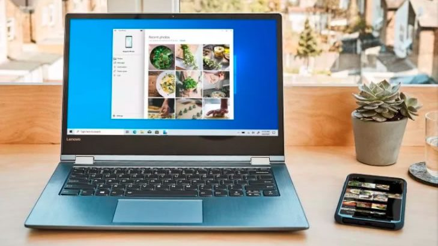
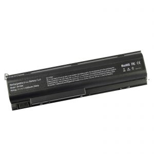

Why is the HP Laptop Battery Not Charging When Plugged In?
Why is the HP laptop battery not charging when plugged in?If your HP laptop has a lithium-ion (Li-Ion) battery, there is an electricity semiconductor present which creates a chemical reaction when an electrical charge runs through it.This reaction causes the battery to release ions of higher voltage.The result is that your laptop power will be restored when the power is turned off.
Li-Ion batteries are widely used in portable electronic devices (PEDs).Their performance is comparable to that of Nickel Cadmium (NiCad) batteries.The only reason behind their popularity is that they are inexpensive, lightweight, and long-lasting.Another reason is that they can be charged via a PC power cord.
A laptop uses the same battery to power both the AC adapter and the display monitor.The monitor part is separate from the main computer system.The laptop battery uses the main power source to keep it running even when the power is turned off.In some cases, the laptop may get into the habit of automatically switching on the monitor when it gets low on power.This behavior can deteriorate battery life to a great extent.
To prevent this problem, you can set the power management state to ‘on’.You should also avoid moving the battery during its charging and discharging cycle.It helps in maximizing battery life.So, why is a laptop battery not charging when plugged in?
One of the main reasons is poor power management.You should have a device manager in your machine to see what processes are taking place on your laptop.If unnecessary processes are going on, then stop them immediately.This will help in reducing power usage.There is software called Power Manager in most of the recent operating systems.
Another reason is the screen brightness.Many people like to use the computer in the dark because it helps them read better.In the case of the laptop, the monitor brightness makes it possible for the power to drain even faster.To reduce the use of the power, turn down the monitor brightness.If you use the laptop in a room with low light, then use a bulb or get sunglasses to protect your eyes.
The final reason is the incomplete installation of the accessories.When you are installing an accessory such as a battery, make sure that you install it correctly.Do not install it on the plug that is backward.This will prevent the power supply from being damaged.If you are not sure about the position of the plug, ask for assistance from customer care.
One more reason is the overuse of the adapter.Many people use the USB to Ethernet adapter even when there is an available USB port in the laptop.These devices can only be detected when they are turned on.Hence, they do not use any energy when they are turned on.This results in the laptop not using enough power when you want to connect to the internet.
Use only the laptop’s power adapter.If you have several devices that use power to operate the laptop, ensure that all of them are plugged in and the laptop is switched off before trying to charge the other ones.It may take several attempts to turn off each device.The longer it takes for them to be turned off, the weaker the connection between them and the battery.If possible, use the laptop alone and just plug the items in one at a time.
There may also be a hardware fault that is causing the battery not to charge.Sometimes, the notebook becomes so hot that it draws too much electricity.This then causes the laptop to shut down by itself.To resolve this problem, you can get a cooler or you can upgrade the power adapter.If you feel that it cannot be fixed by upgrading the hardware, you can try to open the case and look for the cause.
Sometimes, there are software issues that cause the battery not to charge.If the laptop battery is not fully charged, the laptop may show a series of signs like it is not turning on, the screen is foggy, and there may be some unusual software errors.You should try to fix these problems by downloading the latest updates from the company.After doing this, your laptop should start operating normally again.
Other reasons why is hp laptop battery not charging when plugged in include storage.If you frequently bring the computer home from the office and store it inside a bag, there is a possibility that it will overheat.When this happens, the battery will start to lose its capacity and won’t be able to charge.To prevent this from happening, make sure that you bring your computer with you when you travel.Also, don’t leave it in extreme temperature areas where it can get too hot.
Share on Facebook Tweet Follow us
Posted On: 2021-04-04T00:00:00
Posted By: elsa marry




Content Date: 2021-04-04
Download Date: 2021-07-08
Document ID: L0C04DK8O